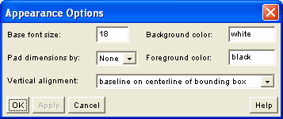

You can open the Appearance Options panel from the Options menu on the WebEQ Publisher main screen. Appearance options affect all equation output formats.

As a work-around, when you specify "baseline on centerline of bounding box" for vertical alignment, the Publisher will attempt to add padding at the top or bottom of each equation to insure that the equation baseline will fall on the centerline of the image or applet. That way, when the Publisher specifies "middle" alignment for the image or applet, the equation baseline will match that of the surrounding text.
The down side of this work-around strategy is that it can introduce a lot of extra spacing between lines of text. If the inter-line spacing seems to be a worse problem than the alignment of the equations with the text, you can instead "use true bounding box" for the verical alignment. In this case, WebEQ Publisher won't add any extra padding, and will use the true equation size instead.